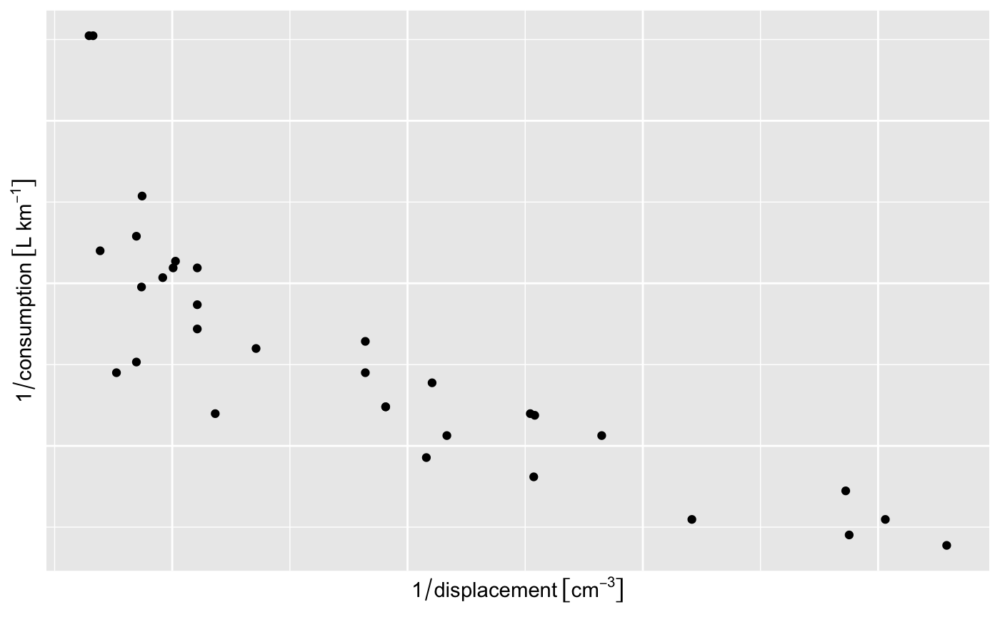

vignettes/measurement_units_in_R.Rmd
measurement_units_in_R.RmdThis vignette is identical to Pebesma, Mailund, and Hiebert (2016), except for two changes:
We briefly review SI units, and discuss R packages that deal with measurement units, their compatibility and conversion. Built upon udunits2 and the UNIDATA udunits library, we introduce the package units that provides a class for maintaining unit metadata. When used in expression, it automatically converts units, and simplifies units of results when possible; in case of incompatible units, errors are raised. The class flexibly allows expansion beyond predefined units. Using units may eliminate a whole class of potential scientific programming mistakes. We discuss the potential and limitations of computing with explicit units.
Two quotes from Cobb and Moore (1997) – Data are not just numbers, they are numbers with a context and in data analysis, context provides meaning – illustrate that for a data analysis to be meaningful, knowledge of the data’s context is needed. Pragmatic aspects of this context include who collected or generated the data, how this was done, and for which purpose (Scheider et al. 2016); semantic aspects concern what the data represents: which aspect of the world do the data refer to, when and where were they measured, and what a value of 1 means.
R does allow for keeping some context with data, for instance
data.frame columns must have and list elements may have names that can be used to describe context, using freetextmatrix or array objects may have dimnames
factor or ordered, levels may indicate, using freetext, the categories of nominal or ordinal variablesPOSIXt and Date objects specify how numbers should be interpreted as time or date, with fixed units (second and day, respectively) and origin (Jan 1, 1970, 00:00 UTC)difftime objects specify how time duration can be represented by numbers, with flexible units (secs, mins, hours, days, weeks); lubridate (Grolemund and Wickham 2011) extends some of this functionality.Furthermore, if spatial objects as defined in package sp (Pebesma and Bivand 2005) have a proper coordinate reference system set, they can be transformed to other datums, or converted to various flat (projected) representations of the Earth (Iliffe and Lott 2008).
In many cases however, R drops contextual information. As an example, we look at annual global land-ocean temperature index (from http://climate.nasa.gov/vital-signs/global-temperature/) since 1960:
temp_data = subset(read.table("647_Global_Temperature_Data_File.txt",
header=TRUE)[1:2], Year >= 1960)
temp_data$date = as.Date(paste0(temp_data$Year, "-01-01"))
temp_data$time = as.POSIXct(temp_data$date)
Sys.setenv(TZ="UTC")
head(temp_data, 3)
## Year Annual_Mean date time
## 81 1960 -0.03 1960-01-01 1960-01-01
## 82 1961 0.05 1961-01-01 1961-01-01
## 83 1962 0.02 1962-01-01 1962-01-01
year_duration = diff(temp_data$date)
mean(year_duration)
## Time difference of 365.2545 daysHere, the time difference units are reported for the difftime object year_duration, but if we would use it in a linear algebra operation
the unit is dropped. Similarly, for linear regression coefficients we see
coef(lm(Annual_Mean ~ date, temp_data))
## (Intercept) date
## 1.833671e-02 4.364763e-05
coef(lm(Annual_Mean ~ time, temp_data))
## (Intercept) time
## 1.833671e-02 5.051809e-10where the unit of change is in degrees Celsius but either per day (date) or per second (time). For purely mathematical manipulations, R often strips context from numbers when it is carried in attributes, the linear algebra routines being a prime example.
Most variables are somehow attributed with information about their units, which specify what the value 1 of this variable represents. This may be counts of something, e.g. 1 apple, but it may also refer to some physical unit, such as distance in meter. This article discusses how strong unit support can be introduced in R.
The BIPM (Bureau International des Poids et Mesures) is “the intergovernmental organization through which Member States act together on matters related to measurement science and measurement standards. Its recommended practical system of units of measurement is the International System of Units (Syst`{e}me International d’Unit'{e}s, with the international abbreviation SI) (http://www.bipm.org/en/measurement-units/)”.
International Bureau of Weights and Measures, Taylor, and Thompson (2001) describe the SI units, where, briefly, SI units
kg; as a base unit, kg can be part of coherent derived units); an example of a coherent derived unit is 1 watt = 1 joule per 1 second,base quantities, SI units and their symbols (from International Bureau of Weights and Measures, Taylor, and Thompson (2001), p. 23):
| Base quantity | SI base unit | ||
|---|---|---|---|
| Name | Symbol | Name | Symbol |
| length | \(l,x,r,\) etc. | meter | m |
| mass | \(m\) | kilogram | kg |
| time, duration | \(t\) | second | s |
| electric current | \(I, i\) | ampere | A |
| thermodynamic temperature | \(T\) | kelvin | K |
| amount of substance | \(n\) | mole | mol |
| luminous intensity | \(I_v\) | candela | cd |
udunits2 R packageUdunits, developed by UCAR/UNIDATA, advertises itself on its web page as: “The udunits package supports units of physical quantities. Its C library provides for arithmetic manipulation of units and for conversion of numeric values between compatible units. The package contains an extensive unit database, which is in XML format and user-extendable.”
The R package udunits2 (Hiebert 2015) provides a low-level R interface to the most important functions in the udunits2 C library.
The functions provided by udunits2 are
library(udunits2)
## udunits system database read from /Users/runner/work/_temp/Library/udunits2/share/udunits2.xml
ls(2)
## [1] "ud.are.convertible" "ud.convert" "ud.get.name"
## [4] "ud.get.symbol" "ud.have.unit.system" "ud.is.parseable"
## [7] "ud.set.encoding"Dropping the ud prefix, is.parseable verifies whether a unit is parseable
ud.is.parseable("m/s")
## [1] TRUE
ud.is.parseable("q")
## [1] FALSEare.convertible specifies whether two units are convertible
ud.are.convertible("m/s", "km/h")
## [1] TRUE
ud.are.convertible("m/s", "s")
## [1] FALSEconvert converts units that are convertible, and throws an error otherwise
ud.convert(1:3, "m/s", "km/h")
## [1] 3.6 7.2 10.8and get.name, get.symbol and set.encoding get name, get symbol or modify encoding of the character unit arguments.
ud.get.name("kg")
## [1] "kilogram"
ud.get.symbol("kilogram")
## [1] "kg"
ud.set.encoding("utf8")
## NULLUnlike the measurements and NISTunits, udunits2 parses units as expressions, and bases its logic upon the convertibility of expressions, rather than the comparison of fixed strings:
m100_a = paste(rep("m", 100), collapse = "*")
dm100_b = "dm^100"
ud.is.parseable(m100_a)
## [1] TRUE
ud.is.parseable(dm100_b)
## [1] TRUE
ud.are.convertible(m100_a, dm100_b)
## [1] TRUEThis has the advantage that through complex computations, intermediate objects can have units that are arbitrarily complex, and that can potentially be simplified later on. It also means that the package practically supports an unlimited amount of derived units.
Another set of encodings for measurement units is the Unified Code for Units of Measure (UCUM, Schadow and McDonald (2009)). A dedicated web site describes the details of the differences between udunits and UCUM, and provides a conversion service between the two encoding sets.
The UCUM website refers to some Java implementations, but some of the links seem to be dead. UCUM is the preferred encoding for standards from the Open Geospatial Consortium. udunits on the other hand is the units standard of choice by the climate science community, and is adopted by the CF (Climate and Forecast) conventions, which mostly uses NetCDF. NetCDF (Rew and Davis 1990) is a binary data format that is widely used for atmospheric and climate model predictions.
The udunits library is a C library that has strong support from UNIDATA, and we decided to build our developments on this, rather than on Java implementations of UCUM with a less clear provenance.
The units package builds units objects from scratch, e.g. where
library(units)
## Warning: multiple udunits databases present:
## - /Users/runner/work/_temp/Library/udunits2/share/udunits2.xml
## - /usr/local/share/udunits/udunits2.xml
## udunits database from /Users/runner/work/_temp/Library/udunits2/share/udunits2.xml
x = set_units(1:5, m/s)
str(x)
## Units: [m/s] int [1:5] 1 2 3 4 5represents speed values in m/s. The units m and s are resolved from the udunits2 C library (but could be user-defined units).
Units can be used in arbitrary R expressions like
set_units(1:3, m/s^2)
## Units: [m/s^2]
## [1] 1 2 3Several manipulations with units objects will now be illustrated. Manipulations that do not involve unit conversion are for instance addition:
x = set_units(1:3, m/s)
x + 2 * x
## Units: [m/s]
## [1] 3 6 9Explicit unit conversion is done by assigning new units:
(x = set_units(x, cm/s))
## Units: [cm/s]
## [1] 100 200 300
as.numeric(x)
## [1] 100 200 300similar to the behaviour of difftime objects, this modifies the numeric values without modifying their meaning (what the numbers refer to).
When mixing units in sums, comparisons or concatenation, units are automatically converted to those of the first argument:
y = set_units(1:3, km/h)
x + y
## Units: [cm/s]
## [1] 127.7778 255.5556 383.3333
y + x
## Units: [km/h]
## [1] 4.6 9.2 13.8
x == y
## [1] FALSE FALSE FALSE
c(y, x)
## Units: [km/h]
## [1] 1.0 2.0 3.0 3.6 7.2 10.8where c(y, x) concatenates y and x after converting x to the units of y. Derived units are created where appropriate:
x * y
## Units: [cm*km/h/s]
## [1] 100 400 900
x^3
## Units: [cm^3/s^3]
## [1] 1.0e+06 8.0e+06 2.7e+07and meaningful error messages appear when units are not compatible:
e = try(z <- x + x * y)
## Error : cannot convert cm*km/h/s into cm/s
attr(e, "condition")[[1]]
## [1] "cannot convert cm*km/h/s into cm/s"The full set of methods and method groups for units objects is shown by
methods(class = "units")
## [1] [ [[ [[<- [<- all.equal
## [6] as_units as.data.frame as.Date as.list as.POSIXct
## [11] boxplot c diff drop_units format
## [16] hist log10 log2 Math mean
## [21] median mixed_units Ops plot print
## [26] quantile rep seq set_units str
## [31] summary Summary units units<- weighted.mean
## see '?methods' for accessing help and source codewhere the method groups
Ops include operations that require compatible units, converting when necessary (+, -, ==, !=, <, >, <=, >=), and operations that create new units (*, /, ^ and **),Math include abs, sign, floor, ceiling, trunc, round, signif, log, cumsum, cummax, cummin, andSummary include sum, min, max and range, and all convert to the unit of the first argument.When possible, new units are simplified:
a = set_units(1:10, m/s)
b = set_units(1:10, h)
a * b
## Units: [m]
## [1] 3600 14400 32400 57600 90000 129600 176400 230400 291600 360000
ustr1 = paste(rep("m", 101), collapse = "*")
ustr2 = "dm^100"
as_units(ustr1) / as_units(ustr2)
## 1e+100 [m]Units are printed as simple R expressions, e.g.
set_units(1, m^5/s^4)
## 1 [m^5/s^4]Another way to print units commonly seen in Climate and Forecast Conventions is m2 s-1 for m\(^2\)/s. These are not R expressions, but they can be parsed by as_units, and created by deparse_unit:
as_units("m2 s-1")
## 1 [m^2/s]
deparse_unit(set_units(1, m^2*s^-1))
## [1] "m2 s-1"The plot and hist methods add units to default axis labels, an example is shown in the following figures. For ggplot2 plots (Wickham 2009), automatic unit placement in default axis label is provided by package ggforce (Pedersen 2016); demo(ggforce) gives an example.
library(units)
units_options(negative_power = TRUE)
# initialize variables with units:
mtcars$consumption = set_units(mtcars$mpg, mi/gallon)
# "in" is also a reserved R keyword, and so needs back-quotes:
mtcars$displacement = set_units(mtcars$disp, `in`^3)
# convert to SI:
mtcars$consumption = set_units(mtcars$consumption, km/l)
mtcars$displacement = set_units(mtcars$displacement, cm^3)
par(mar = par("mar") + c(0, .3, 0, 0))
with(mtcars, plot(1/displacement, 1/consumption))
library(ggforce)
## Loading required package: ggplot2
if (utils::packageVersion("ggplot2") > "2.2.1")
ggplot(mtcars) + geom_point(aes(x = 1/displacement, y = 1/consumption))
Automatic conversion between units and difftime is provided:
(dt = diff(Sys.time() + c(0, 1, 1+60, 1+60+3600))) # class difftime
## Time differences in secs
## [1] 1 60 3600
(dt.u = as_units(dt))
## Units: [s]
## [1] 1 60 3600
identical(as_difftime(dt.u), dt)
## [1] TRUEas well as to and from POSIXct or Date:
(t1 <- as_units(as.POSIXct("2017-08-20 17:03:00")))
## 1503248580 [(seconds since 1970-01-01 00:00:00 +00:00)]
(t2 <- as_units(as.POSIXct("2017-08-20 17:03:00"), "hours since 2017-08-20"))
## 17.05 [(hours since 2017-08-20)]
(d1 <- as_units(as.Date("2017-08-20")))
## 17398 [(days since 1970-01-01)]
as.POSIXct(t1)
## [1] "2017-08-20 17:03:00 UTC"
as.Date(d1)
## [1] "2017-08-20"Objects of class units can be used as columns in data.frame objects, as well as in tbl_df (Wickham, Francois, and Müller 2016). They can also be matrix or array, with the constraint that a single unit holds for all elements.
The units R package provides a new class, units, for numeric data with associated measurement units. Operations on objects of this class retain the unit metadata and provide automated dimensional analysis: dimensions are taken into consideration in computations and comparisons. Combining different units that are compatible triggers automatic unit conversion, derived units are automatically generated and simplified where possible, and meaningful error messages are given when a user tries to add objects with incompatible units. This verifies that computations are not only syntactically and numerically allowed, but also semantically, and in the case of physical units, physically allowed, which may support code verification and provenance tracking. Using this package may eliminate a whole class of potential scientific programming mistakes.
Where the R packages measurements and NISTunits provide conversion between a fixed number of units, with the help of the udunits2 C library and unit database, R package units handles arbitrarily complex derived units. By treating units as expressions it can derive, convert and simplify units. In addition, beyond the SI units packaged, units handles user-defined units.
Data in units vectors can be stored as columns in data.frame or tbl_df objects, and can be converted to and from difftime. When units objects have associated time and location information, they could be stored in spatial or spatio-temporal objects provided by sp or spacetime (Pebesma 2012) as these store attribute data in data.frame slots, but for instance not in zoo (Zeileis and Grothendieck 2005) or xts (Ryan and Ulrich 2014) objects, as these latter two set the class attribute of a vector or matrix.
Despite all standardization efforts, units may still be ambiguous, or subject to interpretation. For instance for the duration of one year NISTunits or udunits2 give us an answer that depends on whether we want a common, leap, Gregorian, Julian, tropical or siderial year (Lang (2006), see also demo(year)). This illustrates that those who apply unit conversion should be aware of possible pitfalls. Support for calendars in udunits seems not as well developed as in R.
Future work includes extending packages that read external data from formats, databases or interfaces with support for measurement unit information into R, preserving the measurement unit information. Examples would be interfaces to HDF5 (e.g., h5, Annau (2016)), RNetCDF (Michna and Woods 2016) or sos4R (Nüst, Stasch, and Pebesma 2011). It would be nice to see units of measurements propagate into units of regression coefficient estimates.
We acknowledge three anonymous reviewers and the handling editor for their constructive comments, and Thomas Lin Pedersen for implementing the ggplot extensions in package ggforce that automatically add units to default ggplot axis labels.
Annau, Mario. 2016. H5: Interface to the ’Hdf5’ Library. https://CRAN.R-project.org/package=h5.
Birk, Matthew A. 2016. Measurements: Tools for Units of Measurement. https://CRAN.R-project.org/package=measurements.
Cobb, George W., and David S. Moore. 1997. “Mathematics, Statistics, and Teaching.” American Mathematical Monthly, 801–23.
Gama, Jose. 2014. NISTunits: Fundamental Physical Constants and Unit Conversions from Nist. https://CRAN.R-project.org/package=NISTunits.
Grolemund, Garrett, and Hadley Wickham. 2011. “Dates and Times Made Easy with Lubridate.” Journal of Statistical Software 40 (1): 1–25. https://doi.org/10.18637/jss.v040.i03.
Hiebert, James. 2015. Udunits2: Udunits-2 Bindings for R.
Iliffe, Jonathan, and Roger Lott. 2008. Datums and Map Projections: For Remote Sensing, Gis and Surveying. CRC Inc.
International Bureau of Weights and Measures, Barry N Taylor, and Ambler Thompson. 2001. “The International System of Units (SI).”
Lang, K. R. 2006. Astrophysical Formulae Volume Ii: Space, Time, Matter and Cosmology, 3rd Edition 1999. 2nd Printing. Springer.
Michna, Pavel, and Milton Woods. 2016. RNetCDF: Interface to Netcdf Datasets. https://CRAN.R-project.org/package=RNetCDF.
Nüst, D., C. Stasch, and E. J. Pebesma. 2011. “Advancing Geoinformation Science for a Changing World.” In, edited by S. Geertman, W. Reinhardt, and F. Toppen, 227–46. Lecture Notes in Geoinformation and Cartography. Springer.
Pebesma, Edzer. 2012. “Spacetime: Spatio-Temporal Data in R.” Journal of Statistical Software 51 (1): 1–30. https://doi.org/10.18637/jss.v051.i07.
Pebesma, Edzer, and Roger Bivand. 2005. “Classes and Methods for Spatial Data in R.” R News 5 (2): 9–13. https://cran.r-project.org/doc/Rnews/.
Pebesma, Edzer, Thomas Mailund, and James Hiebert. 2016. “Measurement Units in R.” The R Journal 8 (2): 486–94. https://doi.org/10.32614/RJ-2016-061.
Pedersen, Thomas Lin. 2016. Ggforce: Accelerating ’Ggplot2’. https://CRAN.R-project.org/package=ggforce.
Rew, Russ, and Glenn Davis. 1990. “NetCDF: An Interface for Scientific Data Access.” IEEE Computer Graphics and Applications 10 (4): 76–82.
Ryan, Jeffrey A., and Joshua M. Ulrich. 2014. Xts: EXtensible Time Series. https://CRAN.R-project.org/package=xts.
Schadow, Gunther, and Clement J McDonald. 2009. “The Unified Code for Units of Measure.” Regenstrief Institute and UCUM Organization: Indianapolis, IN, USA.
Scheider, Simon, Benedikt Gräler, Edzer Pebesma, and Christoph Stasch. 2016. “Modeling Spatiotemporal Information Generation.” International Journal of Geographical Information Science 30 (10): 1980–2008. https://dx.doi.org/10.1080/13658816.2016.1151520.
Wickham, Hadley. 2009. Ggplot2: Elegant Graphics for Data Analysis. Springer-Verlag New York.
Wickham, Hadley, Romain Francois, and Kirill Müller. 2016. Tibble: Simple Data Frames. https://CRAN.R-project.org/package=tibble.
Zeileis, Achim, and Gabor Grothendieck. 2005. “Zoo: S3 Infrastructure for Regular and Irregular Time Series.” Journal of Statistical Software 14 (6): 1–27. https://doi.org/10.18637/jss.v014.i06.